Lab Solutions
Lab 1
arbuthnot$girlsThere’s a generally upwards trend in the number of girls baptized.
Here is the code I used to generate the plot.
arbuthnot %>% mutate(total = boys + girls) %>% mutate(prop_boys = boys / total) %>% ggplot(aes(year, prop_boys)) + geom_point() + geom_line()The result is the following. It fluctuates a lot, but always stays solidly above 0.5.
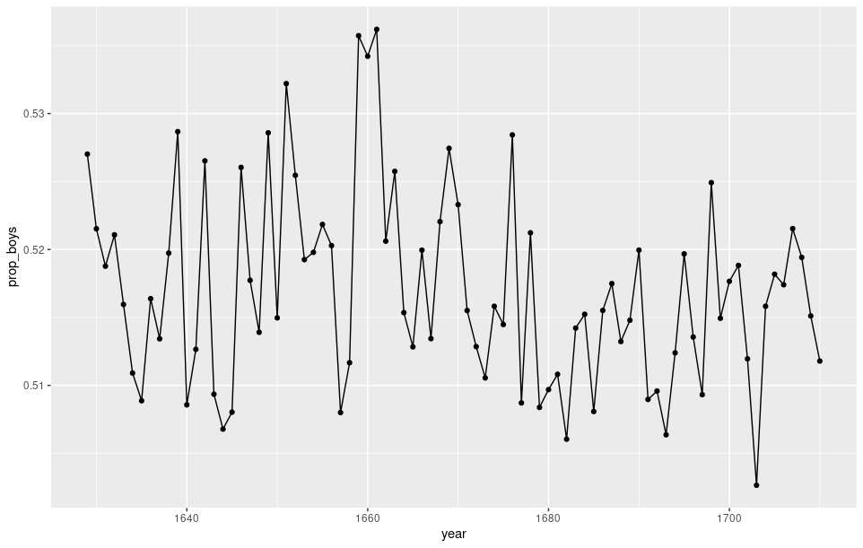
We use the following command to load and store the data:
present <- read_csv("https://sagrawalx.github.io/teaching/data/present.csv")The data is from years 1940–2002. There are 63 rows and 3 columns; the column names are
year,boys, andgirls.The birth counts are not on a similar scale: the
presentdata counts births in the millions, while Arbuthnot’s data counts births in the thousands.Here is the code that generates the plot:
present %>% mutate(ratio = boys / girls) ggplot(aes(year, ratio)) + geom_point() + geom_line()There ratio fluctuates a lot, but there’s a vaguely decreasing trend. In any case, the noteworthy observation here is that this ratio is always solidly above 1.
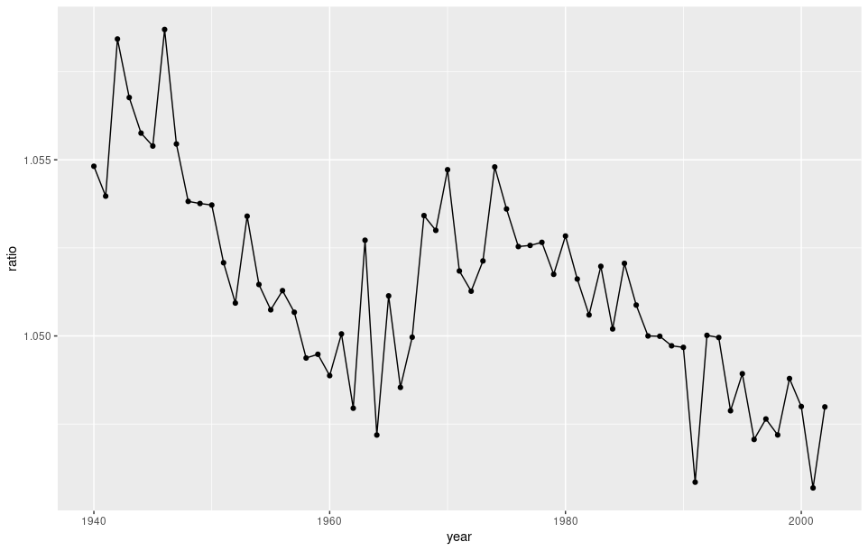
Note: This is consistent with the observation that developed countries (ie, ones which don’t have issues involving sex-selective abortions) tend to have a sex ratio at birth of roughly 1.05 males per female. This in spite of the fact that the females are slightly more numerous in the overall population, since women tend to live longer than men. Depending on how much outside reading the students did, they may say some of this, but they should at least observe that the sex ratio in the plot above is always solidly above 1.
The largest number of total births happened in 1961, as seen in the following:
present %>% mutate(total = boys + girls) %>% slice_max(total)
Lab 2
There are 20000 cases and 9 variables.
genhlth,exerany,hlthplan,smoke100, andgenderare categorical, whileheight,weight,wtdesire, andageare numerical.For
heightandage, we get the following numerical summaries, and the interquartile ranges are 6 and 26, respectively.Input:
R summary(cdc$height) summary(cdc$age)Output: ``` Min. 1st Qu. Median Mean 3rd Qu. Max. 48.00 64.00 67.00 67.18 70.00 93.00Min. 1st Qu. Median Mean 3rd Qu. Max.18.00 31.00 43.00 45.07 57.00 99.00 ```
There are 9569 males in the sample (as computed by
table(cdc$gender)). 4657 people in the sample report being in excellent health (as computed bytable(cdc$genhlth)), which is 23.285% of the sample.The side-by-side bar plot shows that relatively more men report having smoked 100 cigarettes than women.
under23_and_smoke <- filter(cdc, age < 23 & smoke100 == "1")The box plot of
genhlthagainstbmishows that decreasing health appears to coincide with higher BMIs.
Here is a box plot of
hlthplanagainstbmi. It appears that having a health plan is correlated with fewer extreme BMIs. Note: students might choose different variables here.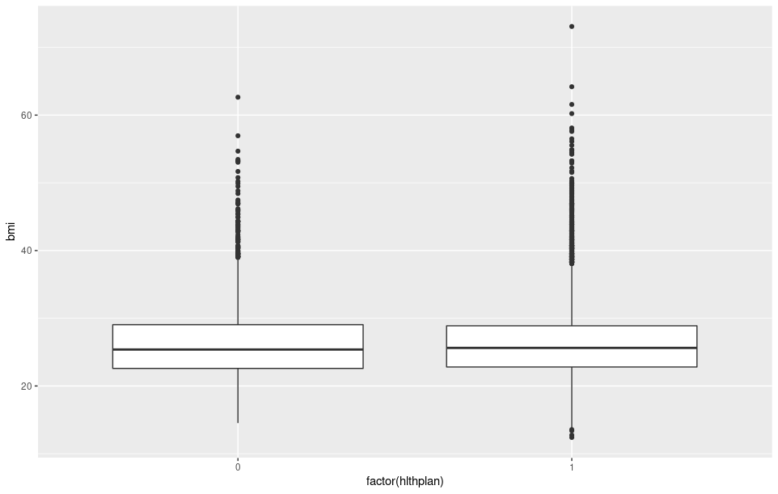
Here is the code:
ggplot(cdc, aes(weight, wtdesire)) + geom_point()The scatterplot shows a generally positive trend, but the slope appears to be less than 1.
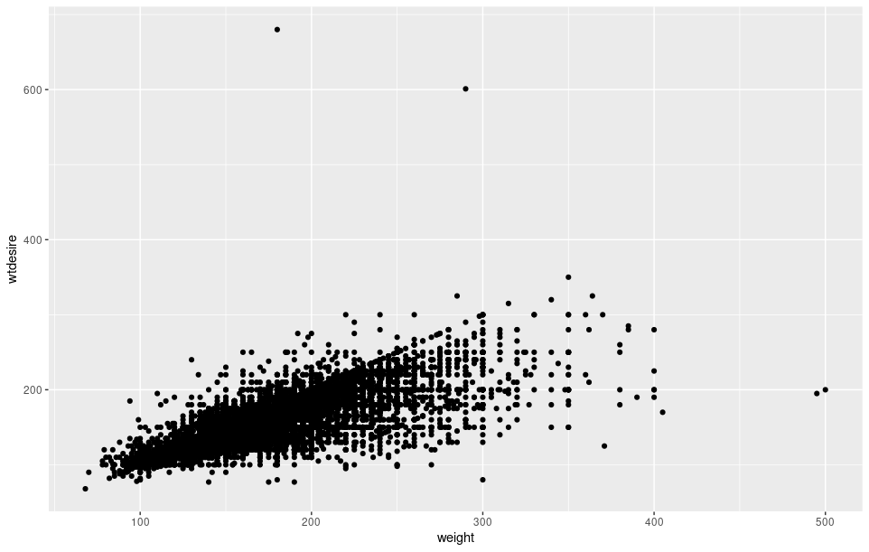
Note: Students might interchange axes, and that’s fine.
cdc <- mutate(cdc, wtlossdesire = weight - wtdesire)An entry of 0 means that person is at their desired weight. An positive entry indicates the person wants to lose weight, and a negative entry indicates they want to gain weight.
Note: Setting
wtlossdesire = wtdesire - weightis incorrect.Running the following code generates the plots given below.
ggplot(cdc, aes(wtlossdesire)) + geom_histogram(binwidth = 10) ggplot(cdc, aes(y = wtlossdesire)) + geom_boxplot()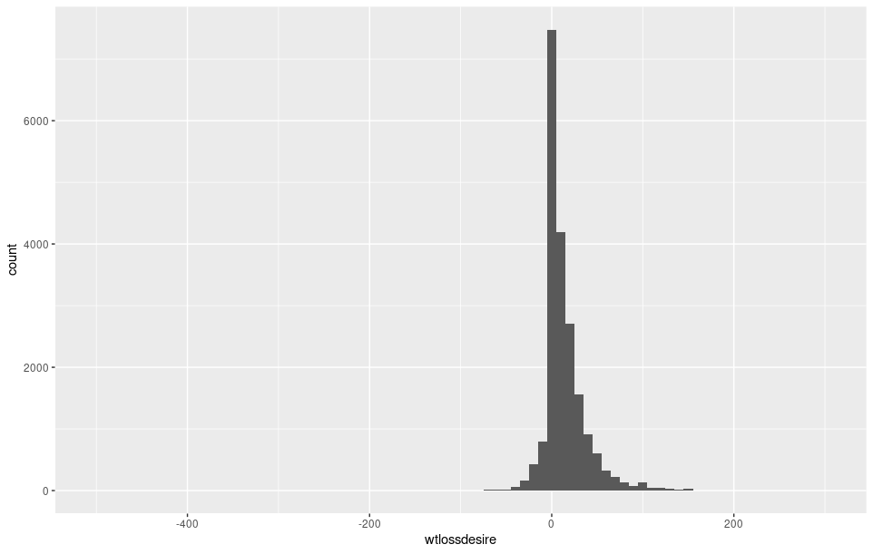 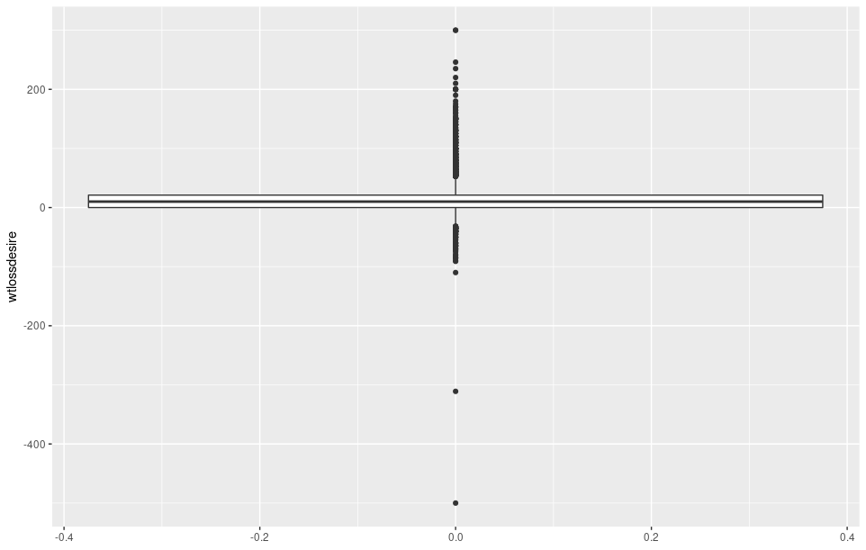
It appears that most people are happy with their weights, but there is more of a skew towards the positive side (ie, more people want to lose weight than gain).
Here are numerical summaries.
male <- filter(cdc, gender=="m") female <- filter(cdc, gender=="f") summary(male$wtlossdesire) summary(female$wtlossdesire)Output:
Min. 1st Qu. Median Mean 3rd Qu. Max. -500.00 0.00 5.00 10.71 20.00 300.00 Min. 1st Qu. Median Mean 3rd Qu. Max. -83.00 0.00 10.00 18.15 27.00 300.00And here is a side-by-side box plot. It’s hard to see information in the box plots, but we can see from the numerical summaries that women generally want to lose more weight.
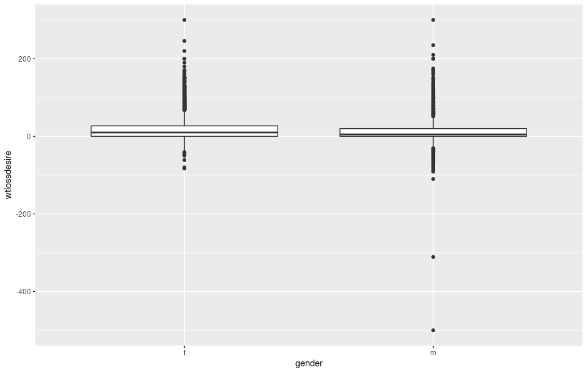
The mean is approximately 169.7 and the sd is approximately 40.1. Roughly 70.76% of the weights are within one standard deviation of the mean, as is output by the following:
m <- mean(cdc$weight) s <- sd(cdc$weight) within_one_sd <- filter(cdc, weight > m-s & weight < m+s) nrow(within_one_sd)/20000Note: It is not correct if students just assume that
weightis normally distributed and use the 68-95-99.7 rule. They should actually calculate the proportion of observations that are within one standard deviation using afilter, like above.
Lab 3
There is always exactly one miss in any streak. A streak of 1 has one hit and one miss. A streak of 0 has just one miss.
There are fewer and fewer longer streaks. The longest streak was 4, though the most frequent was 0.
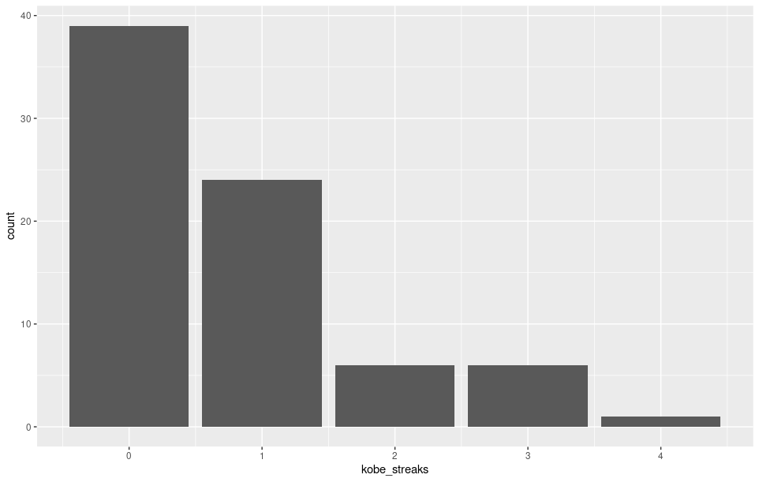
I got 21 heads, 79 tails. Note: Others might have different answers here, since this is a random simulation.
sim_basket = sample(outcomes, size = 133, replace = TRUE, prob = c(0.45, 0.55))There are fewer and fewer longer streaks. The longest streak was 7, but the most frequent was 0.
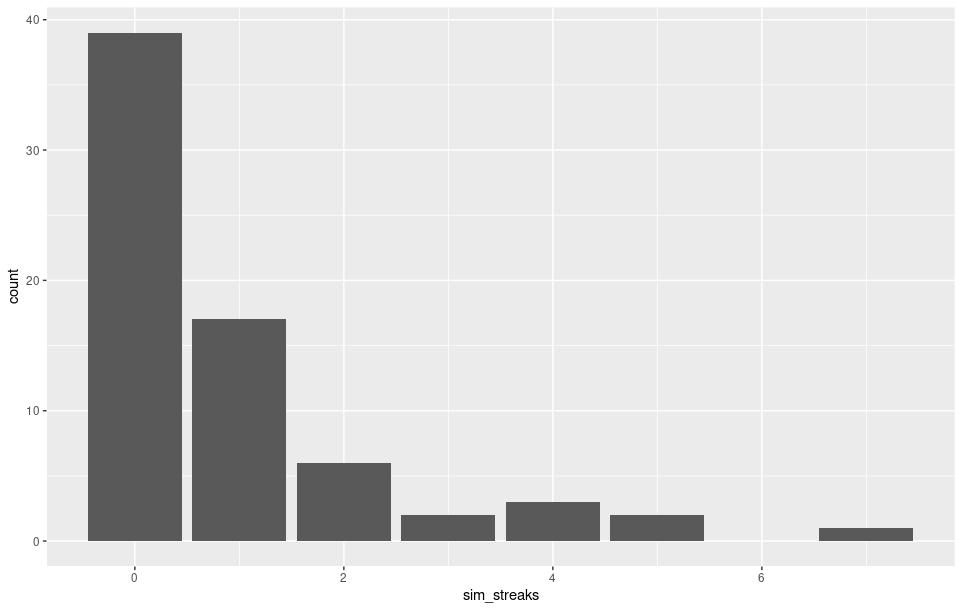
If we run the simulation again, the distribution should be similar, but not necessarily identical. Sometimes the longest streak is 4, sometimes it gets as long as 10, but it’s never terribly different from this.
These simulations do not give evidence that Kobe has hot hands: all of the simulations are either similar to Kobe’s distribution, or they had even longer streaks!
Lab 4
Here are the distributions, overlaid one on top of the other. Note: It’s okay if students make two separate histograms.
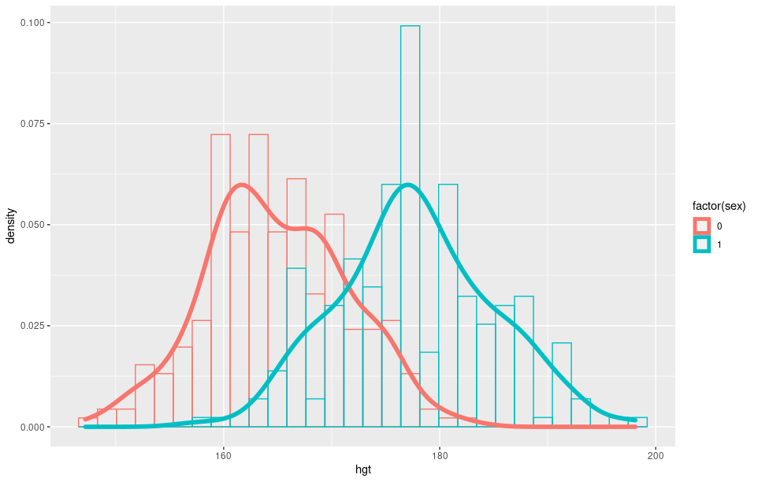
Women tend to be less tall, but both distributions are roughly normal.
It does appear roughly normal.
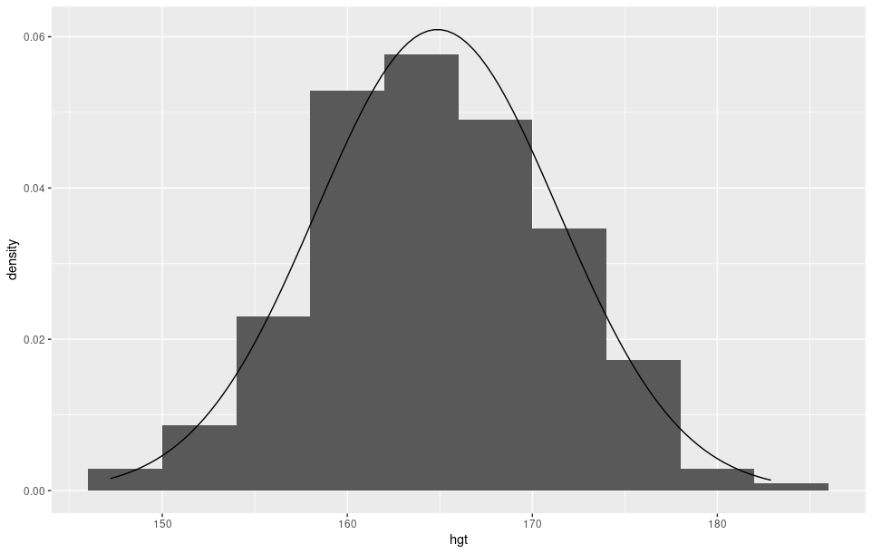
The Q-Q plot of the simulated data looks an awful lot like the Q-Q plot of the real data.
The plots do provide evidence that female heights are nearly normal.
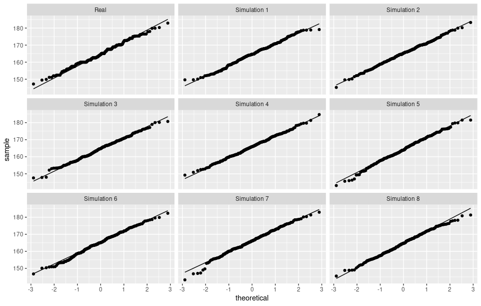
Female weights seem less normally distributed than heights.
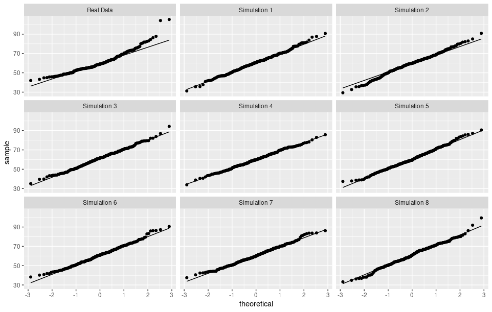
What is the probability that female heights are less than 178? The normal distribution says 97.8%, the actual data says 98.1%.
What is the probability that female weights are less than 61? The normal distribution says 51.7%, the actual data says 59.2%.
The answer for the height distribution is much closer.
Note: Students may ask different probability questions. In any case, they should find that the answers for height are closer than the answers for weight.
A =
che.de, B =bii.di, C =elb.di, D =ageThe Q-Q plot and the histogram are displayed below. In the Q-Q plot, the data lies above the line. This means that sample quantiles are above theoretical quantiles, which means that at any given point, we’ve seen more data than we would expect if the distribution was normally distributed. This means that the mass of the distribution is further to the left, so the distribution should be right skewed. This is confirmed by the histogram.
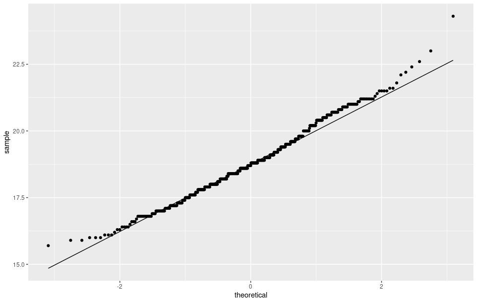
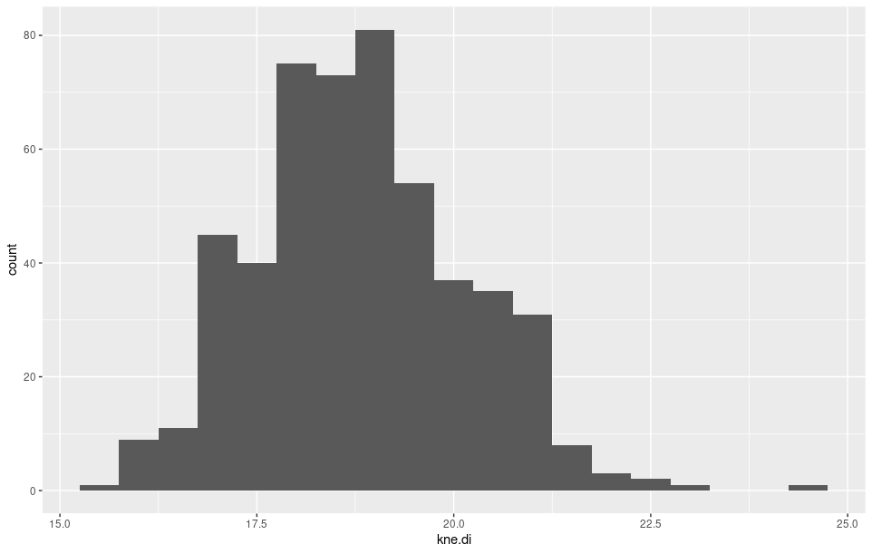
Here is the code used to generate these plots:
ggplot(bdims, aes(sample = kne.di)) + geom_qq_line() + geom_qq() ggplot(bdims, aes(kne.di)) + geom_histogram(binwidth = 0.5)
Lab 5
The distribution is slightly right skewed. The mean, at 1500, is slightly higher than the median, at 1442.
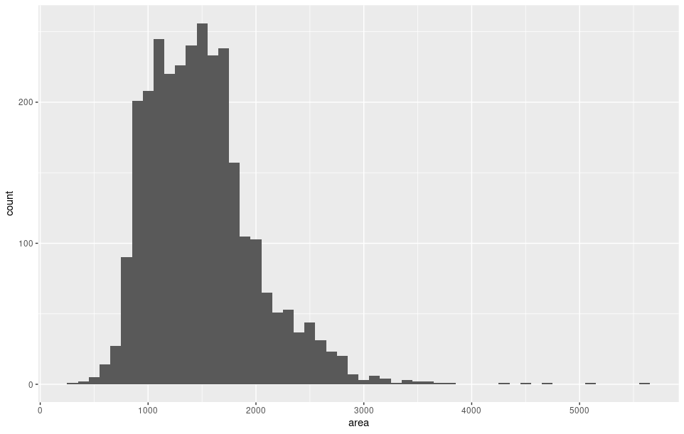
samp1has a less bell-curved-looking distribution for area, though it is still right skewed. The mean is 1486.42.Note: There is randomness involved here. Students’ answers may differ slightly.
samp2had a mean of 1418.44, which was less than the mean ofsamp1. If we took a larger sample, the sample mean should be closer to the true mean.Note: There is randomness involved here. Students’ answers may differ slightly.
There are 5000 rows. The distribution is roughly normal, centered at 1500. If we took 50000 means, the distribution should still look roughly normal centered at 1500.
There are 100 rows. Each is a mean of a sample of 50 areas.
samples_small <- tibble(size = numeric(), mean_area = numeric()) for(i in 1:100) { samp <- slice_sample(ames, n = 50) samples_small <- add_row(samples_small, size = 50, mean_area = mean(samp$area)) } samples_smallOutput:
# A tibble: 100 × 2 size mean_area <dbl> <dbl> 1 50 1506. 2 50 1458. 3 50 1665. 4 50 1512. 5 50 1657. 6 50 1356. 7 50 1539. 8 50 1444. 9 50 1466. 10 50 1298. # … with 90 more rowsWhen the sample size is larger, the variability decreases.
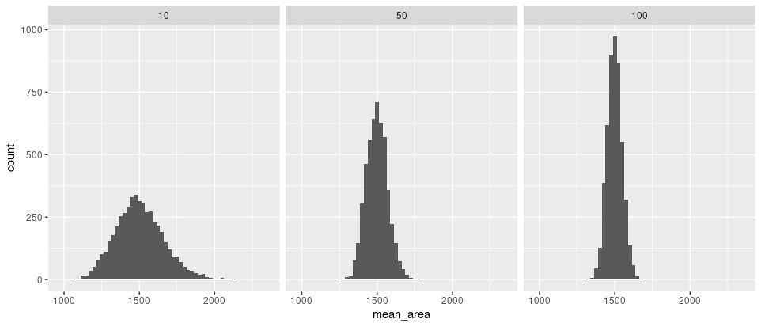
Running
mean(slice_sample(ames, n = 50)$price)yields 169726.3.Note: There is randomness involved here.
To generate
sample_means50, we run the following:samples <- tibble(size = numeric(), mean_price = numeric()) for(i in 1:5000) { samp <- slice_sample(ames, n = 50) samples <- add_row(samples, size = 50, mean_price = mean(samp$price)) } ggplot(samples, aes(mean_price)) + geom_histogram(bins = 50) mean(samples$mean_price)Here is the distribution. It is normal, with mean 180755.8. The true mean is 180796.1. Note: There is randomness involved here, so answers might differ slightly (but probably not a lot).
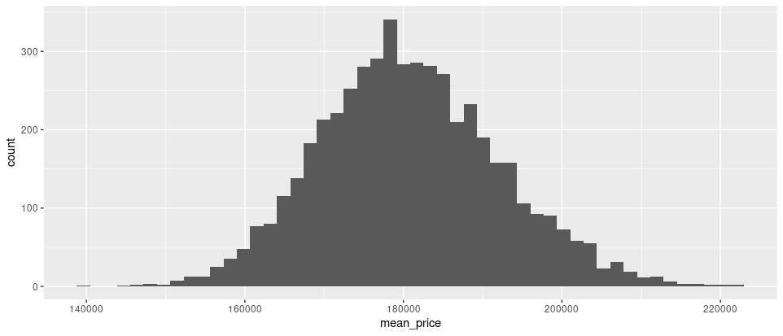
We run the following:
samples <- tibble(size = numeric(), mean_price = numeric()) for(i in 1:5000) { samp <- slice_sample(ames, n = 150) samples <- add_row(samples, size = 150, mean_price = mean(samp$price)) } ggplot(samples, aes(mean_price)) + geom_histogram(bins = 50) mean(samples$mean_price)Below is the distribution. It is also normal, with mean 180882. This is a little closer to the true mean. Note: There is randomness involved here, so answers might differ slightly (but probably not a lot).
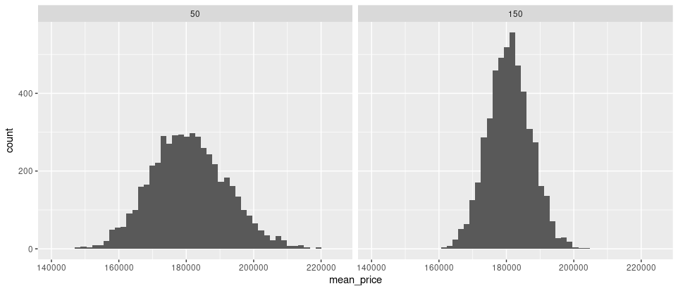
The distribution for sample sizes of 150 is narrower than the one for 50. This can be quantified by comparing the standard deviations. If we want to be more confident about our estimate, we should use a distribution with a narrower distribution (ie, we should take larger sample sizes).
Lab 6
Sample statistics (they certainly didn’t talk to everyone in the world!).
The study needs to have been a simple random sample. It’s fairly unlikely that this is the case on the nose. A large portion of the global population is not easy to communicate with (living in remote locations, lack of access to communications technology, etc), but it seems that the study did try to minimize bias, so we can probably assume that the sample was “simple random” enough.
Note: Exact answers might differ from the above. This might be one of those questions where almost any (reasonable?) response will get full credit.
Each row in Table 6 corresponds to a country. Each row in
atheistcorresponds to a person.We run the following code:
us12 <- filter(atheism, nationality == "United States" & year == "2012") count(us12, response)This shows that 50 out of 1002 US respondents reported being an atheist, and 50/1002 = 0.0499002, which is basically 5% up to minor rounding.
We need the sample to be independent: as noted earlier in question 2, this is a bit unlikely, but maybe it’s close enough. We also need the sample size to be large enough that the success-failure condition is satisfied. The success-failure condition requires checking that \(1002 \cdot 0.05\) and \(1002 \cdot 0.95\) are both bigger than 10, which is true.
The margin of error is about 0.014. The 95% confidence interval is (0.0364 , 0.0634).
The 90% confidence interval is (0.03858586 , 0.06121454). This interval is narrower. This makes sense because, to be more confident that our interval captures the true proportion, we’ll need the interval to be wider.
In India, 33 out of 1092 respondents reported being atheist, which is about 3%. The success-failure condition is satisfied (because both the atheist and non-atheist numbers are larger than 10), but it’s likely that the sample isn’t that great. The 95% confidence interval is (0.0201 , 0.0404), and the margin of error is about 0.0102.
In Japan, 372 out of 1212 respondents reported being atheist. Same comments about applicability of confidence interval methods. The 95% confidence interval is (0.281 , 0.3329), which has margin of error about 0.0259.
Note: Students might choose different countries here.
The graph is shaped like the top half of an ellipse. Note: Students might say something like “semicircle” or “parabolic” or something, and that’s okay too.
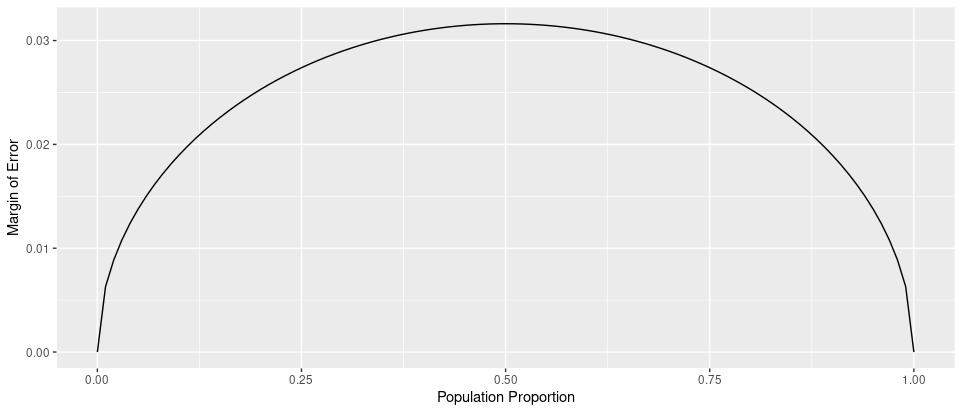
The distribution is roughly normal, with mean at 0.09969.
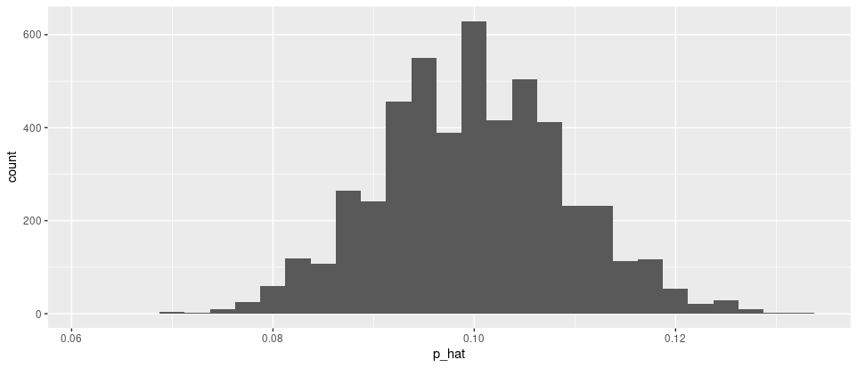
Note: Randomness is involved here, so students’ means might differ slightly.
The plots are displayed below. Increasing \(n\) seems to make the plot narrower. Changing \(p\) seems to move the center of the plot. All four are roughly normal, except for the very last one which is a little cut off towards the bottom, making it right skewed.
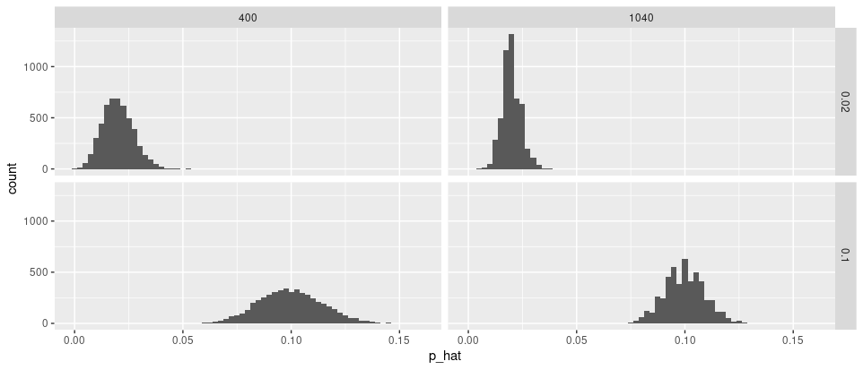
For Australia, we have \(np \approx n\hat{p} = 1040 \cdot 0.1 = 104 \geq 10\) and \(n(1-p) \approx n(1-\hat{p}) = 1040 \cdot 0.9 \geq 10\), so it is reasonable to proceed with inference.
For Ecuador, we have \(np \approx n\hat{p} = 200 \cdot 0.02 = 4 < 10\), so it is not a great idea to proceed with inference on Ecuador’s data. The sampling distribution is likely not normal in this case.
For Spain, the success-failure condition is satisfied, though I have the same concerns about randomness of the sample that I’ve mentioned above. The 2005 confidence interval is (0.083 , 0.1177), and the 2012 confidence interval is (0.0734 , 0.1065). These overlap, so we do not have convincing evidence of chance.
es05 <- filter(atheism, nationality == "Spain" & year == "2005") es12 <- filter(atheism, nationality == "Spain" & year == "2012") proportion_ci(es05$response == "atheist") proportion_ci(es12$response == "atheist")In the US, the intervals are (0.0038 , 0.0161) and (0.0364, 0.0634), which do not overlap. This does provide some evidence of change.
us05 <- filter(atheism, nationality == "United States" & year == "2005") us12 <- filter(atheism, nationality == "United States" & year == "2012") proportion_ci(us05$response == "atheist") proportion_ci(us12$response == "atheist")We’d expect to detect a change in 5% of the countries in which there has been no change.
The point here is to look at the inequality \[2 \sqrt{\frac{p(1-p)}{n}} \leq 0.01\] and solve it for \(n\). Simplifying this gives \(n \geq 40000p(1-p)\). The largest possible value of \(p(1-p)\) happens when \(p = 0.5\). When \(p = 0.5\), we have \(40000p(1-p) = 10000\). So we should sample at least 10000 people.
Lab 7
The distribution is right skewed. If “typical” size means mean, then the mean is 1500.967, though perhaps the median is a better estimate since the data is skewed. The median is 1456. Note: It’s fine if they interpret “typical” to mean either mean or median.
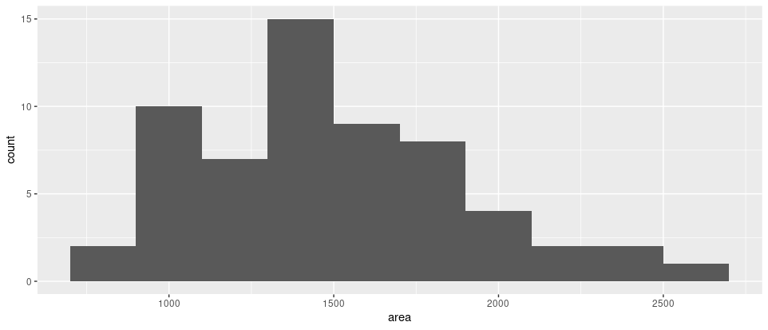
Other peoples’ should be similar, but not identical. Different people will have different samples of 60.
The observations need to be independent and the sample size needs to be at least 30.
“95% confidence interval” means that, 95% of the confidence intervals constructed in this way will contain the true mean.
Yes, my confidence interval does contain the true mean.
One would expect that 95% of confidence intervals constructed in this way will contain the true mean.
47/50 contain the true mean, which is about 94%. This is approximately equal to the confidence level, but not quite. This makes sense because we’d only expect 95% of confidence intervals to contain the true mean in the limit (eg, if we took 50000000 samples instead of just 50).
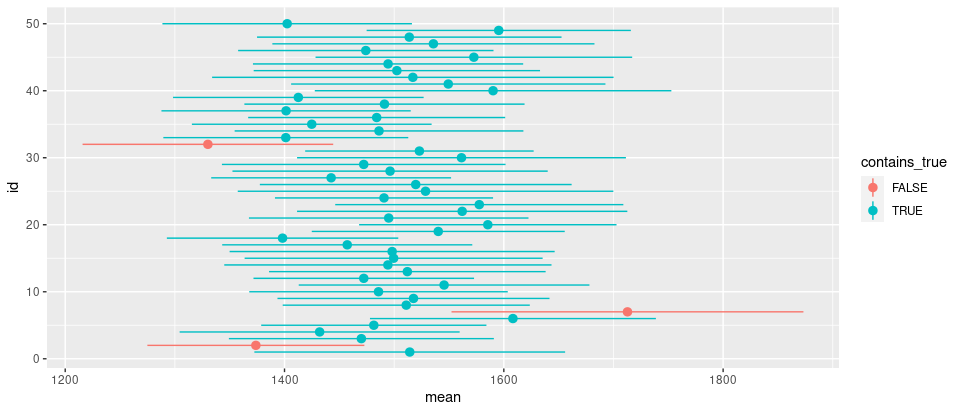
The critical value for 50% confidence interval can be calculated as
qt(0.75, 59), or by using a normal approximation asqnorm(0.75), both of which yield 0.674. Note: Students might choose different confidence levels here, so their computation of the critical value will also be different.Constructing 50% confidence intervals (which are much narrower than 95% confidence intervals), 23 of them do not contain the true mean. Thus 27/50 = 54% of them do, which is pretty close. Note: Again, students might have chosen a different confidence level in the question above, so their answer here might be different.
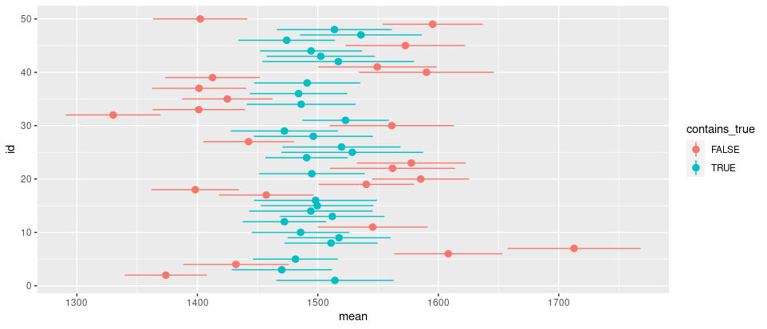